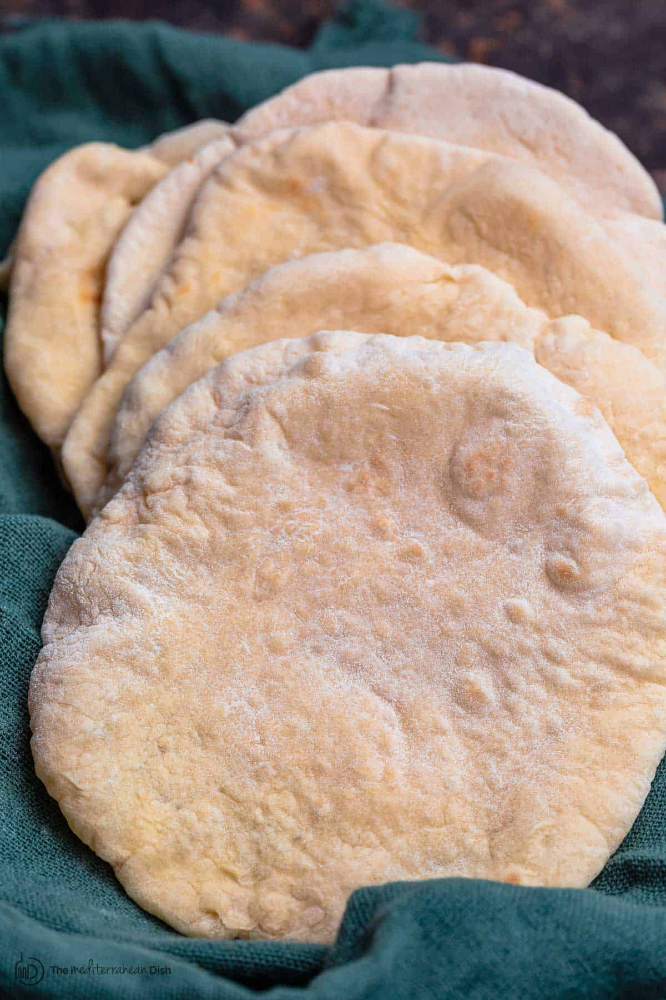

Pita Bread

Description
Pita bread is a type of flatbread that originated in the Middle East and mediterranean regions.
It is known for its unique pocket-like structure that forms during baking, allowing it to be easily filled with various ingredients.
Pita bread is typically made from simple ingredients such as flour, water, yeast, and salt, making it a versatile and delicious accompaniment to a wide range of dishes.
It can be used for sandwiches, wraps, or as a side to dips like hummus and baba ganoush.
Ingredients
- 3 cups all-purpose flour
- 1 packet (2 1/4 teaspoons) active dry yeast
- 1 cup warm water (110°F/45°C)
- 1 tablespoon olive oil
- 1 teaspoon sugar
- 1 teaspoon salt
Steps
- Combine warm water and dry yeast with sugar in a large mixing bowl
- Let sit for 15 mins until froth and bubbly
- Add salt olive oil and flour until it forms a shaggy mass
- Turn the dough out onto a floured surface and knead for about 8-10 minutes until it becomes smooth and elastic
- Place the dough in a lightly oiled bowl, cover it with a damp cloth, and let it rise in a warm place for about 1-2 hours, or until it has doubled in size.
- Gently deflate the dough and divide into 7-8 equal pieces. Cover with towel cloth and leave for 10 mins to rest
- Preheat the oven to 475°F (245°C) and place a baking pan or large skiller on the middle rack to heat up.
- Roll each piece of dough into a circle about 1/4 inch thick. Carefully place the rolled dough onto hot baking surface, bake for 2 minutes on one side, the flip and bake for another 2 minutes
until the pita puffs up. Repeat with remaining dough.
- Remove the pita bread from the oven and let it cool slightly before serving. Enjoy!
Back to recipes